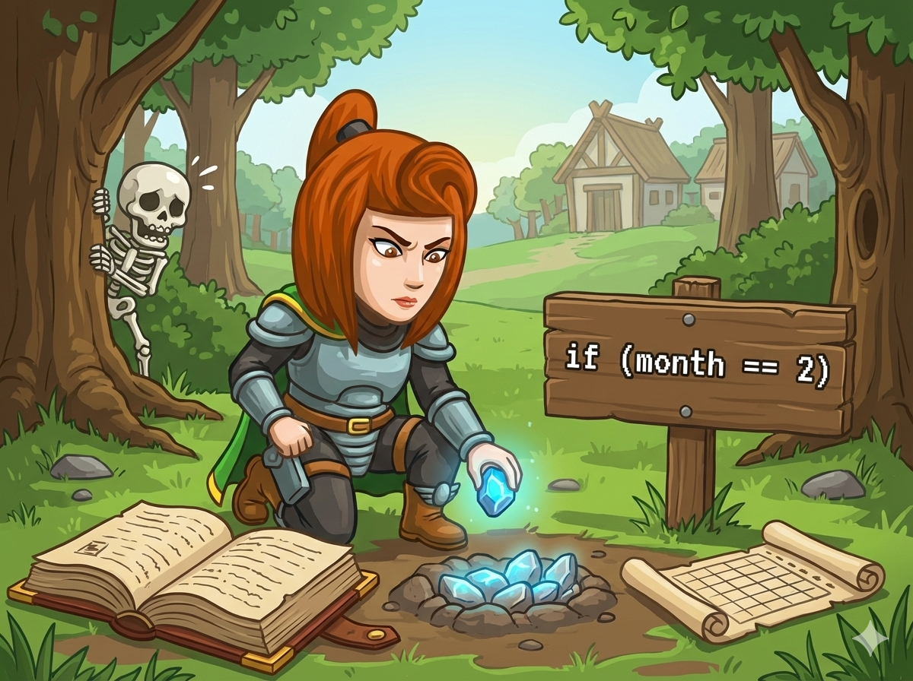

在平原森林村 🌲，英雄每天都会放置一块 发光石 来驱赶黑暗中的骷髅 💀。 英雄非常细心，他想算算某一年里的某一个月，到底放了多少块石头。
💡 规则：
1. 每天放 1 块。
2. 石头总数 = 这个月的天数。
👉 任务： 读入 年份(y) 和 月份(m)，输出这个月有多少天。 别忘了，2月可是个调皮的月份，它的天数和 闰年 有关哦！
想要算出天数，我们得把 12 个月份分成三类，并用 if-else 魔法来分类处理。
1, 3, 5, 7, 8, 10, 12
4, 6, 9, 11
闰年：29天
平年：28天
英雄正在翻日历，快写代码帮他统计吧！
#include <iostream> using namespace std; int main() { // 1️⃣ 声明变量：y(年), m(月) int y, m; cin >> y >> m; // 2️⃣ 先挑出小月 (4,6,9,11月) -> 30天 if (m == 4 || m == 6 || m == 9 || m == 11) { cout << 30; } // 3️⃣ 如果不是小月，也不是2月 -> 那就是大月 31天 else if (m != 2) { cout << 31; } // 4️⃣ 剩下的只能是 2 月了，开始判断闰年 else { // 闰年公式：(被4整除且不被100整除) 或者 (被400整除) if ((y % 4 == 0 && y % 100 != 0) || (y % 400 == 0)) { cout << 29; // 闰年2月 } else { cout << 28; // 平年2月 } } return 0; }
# 1️⃣ 输入：读取年份 y 和 月份 m y, m = map(int, input().split()) # 2️⃣ 判断月份 if m in (1, 3, 5, 7, 8, 10, 12): print(31) # 大月 elif m in (4, 6, 9, 11): print(30) # 小月 else: # 剩下的就是 2 月，判断闰年 if (y % 4 == 0 and y % 100 != 0) or (y % 400 == 0): print(29) # 闰年2月 else: print(28) # 平年2月
⭐ 记忆口诀： 一三五七八十腊(12)，三十一天永不差。 四六九冬(11)三十整。 平年二月二十八，闰年二月把一加。